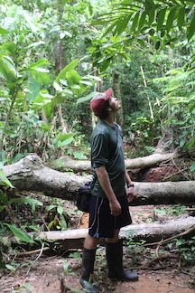

Dave Klinges is a PhD student at the University of Florida in the Scheffers Lab and a Research Associate of the Smithsonian Institution. As a “full-stack” ecologist, his work ranges from fieldwork in remote jungles to building data curation pipelines, Bayesian hierarchical modeling, and ecological forecasting. See his Research Program for more.
Nature Dave was raised in the wildlands of suburban central New Jersey in the town of Princeton. As a young adventurer, he explored the exotic and untamed local pond, fondly dubbed the “Frog Pond,” in search of snapping turtles, northern water snakes, and of course, many frogs.
">
Unfulfilled by this flat and developed realm, a yearning for the outdoors brought him to little Hanover, New Hampshire, to attend Dartmouth College. On weekends and breaks from school, Nature (earning this nickname during a freshman orientation hiking trip, during which he frequently stopped the group to identify trees and amphibious wildlife) would hike in the nearby White Mountains, or travel on other backpacking adventures with the Dartmouth Outing Club.
But one of the biggest draws of Dartmouth was the school’s foreign study program (FSP) in Biology. Six weeks in Costa Rica and three more on Little Cayman Island opened to him the whole world of tropical ecology, and after he cut his teeth studying poison frog coloration and marine snail distributions, there was no turning back.
Download CV